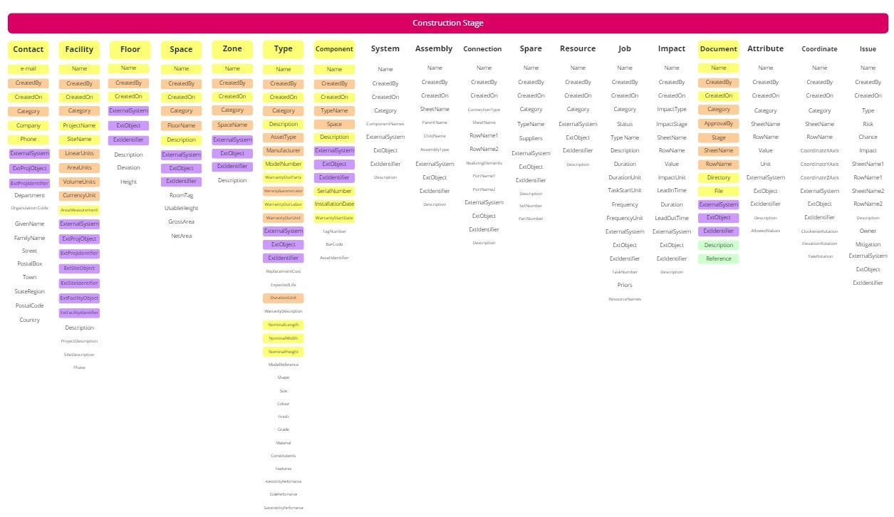

The INTERMEDIATE level builds upon the foundation of the LITE level by introducing asset-specific data. At this stage, the focus shifts toward identifying specific equipment types and their physical instances (components), making it a critical level for contractors and procurement teams.

Figure: INTERMEDIATE level data requirements, including Type and Component information.
Key Focus Areas:
Systems: Logical grouping of components (e.g., AHU-01 Supply System).
Types: Technical specifications, manufacturer name, and model numbers.
Components: Individual instances of equipment mapped to their specific Spaces.